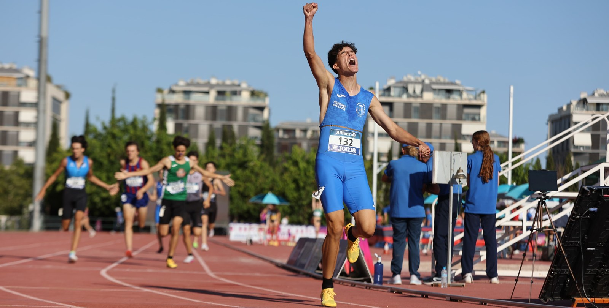
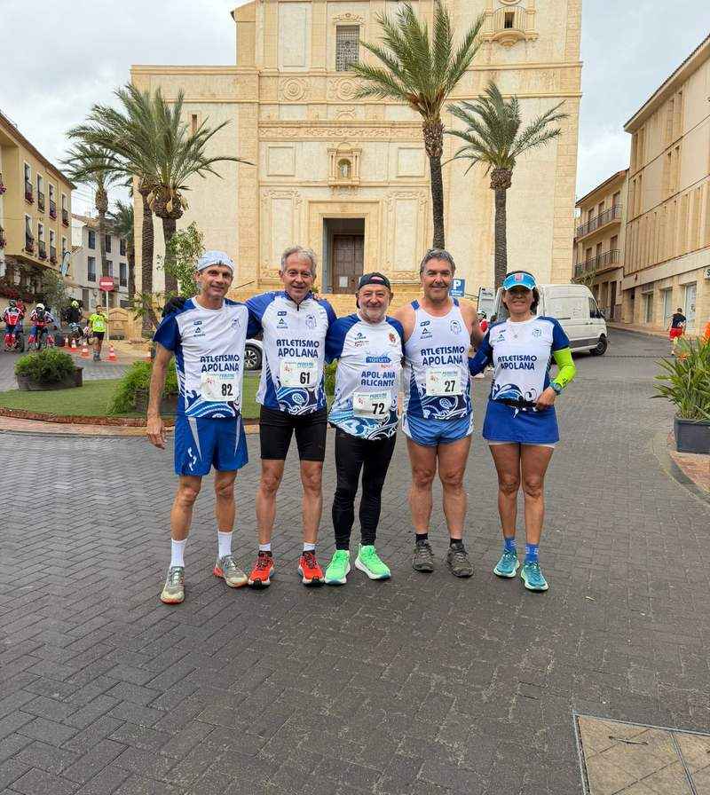
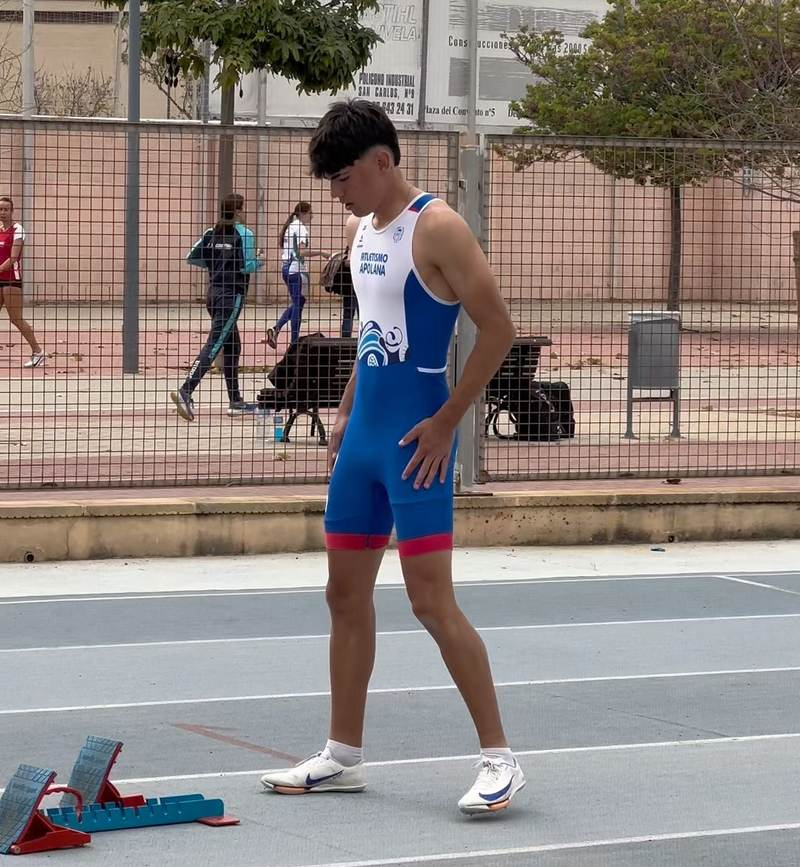
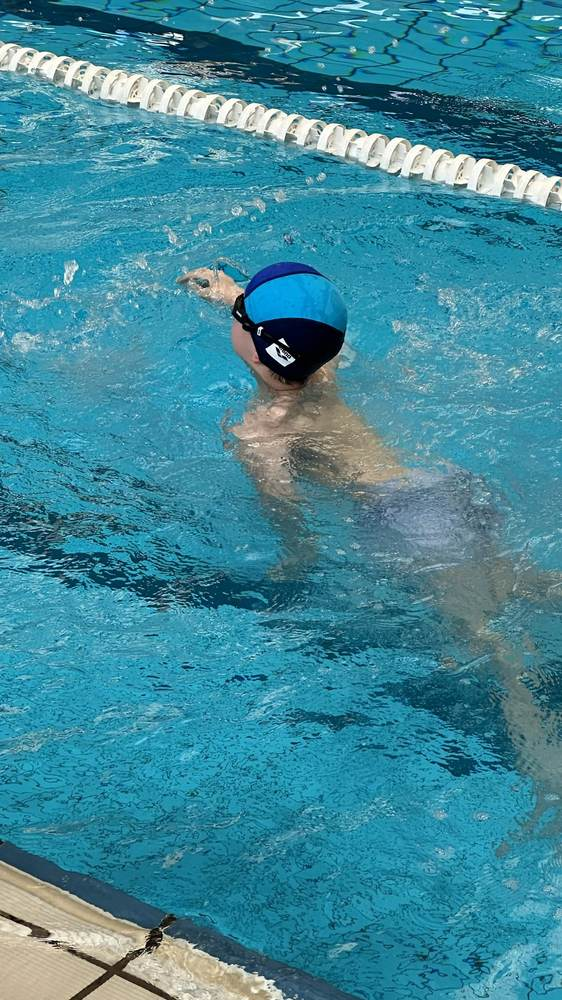
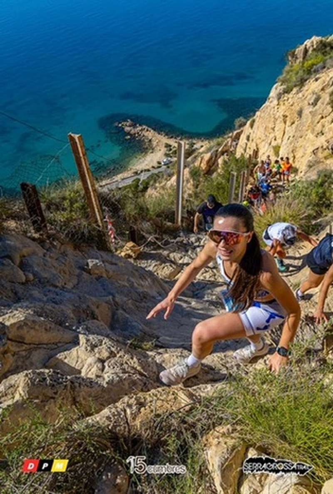
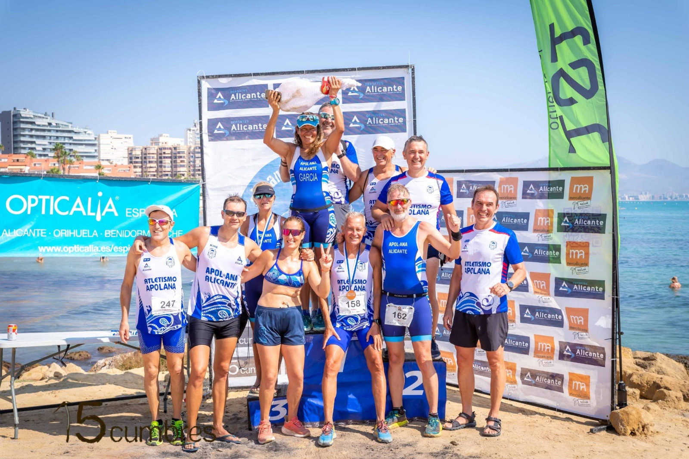
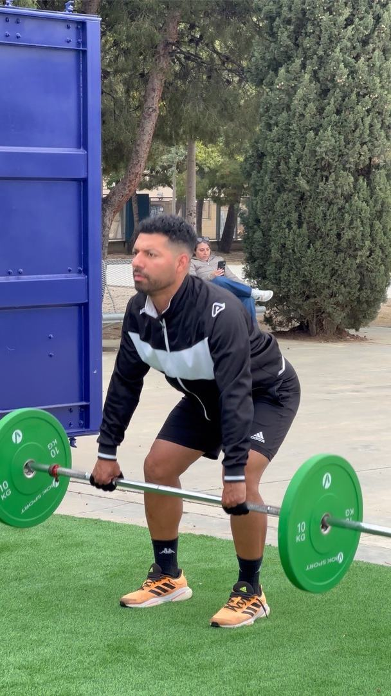

Club deportivo · Alicante · desde 1988
Aquí siempre hay alguien entrenando
Atletismo, running, triatlón, natación y montaña.Qué hacemos

Running Kilómetro Cero, Madre Tierra y La Tribu
Atletismo en pista Competición y velocidad
Natación Adultos, en Monte Tossal
Montaña Competir y disfrutar de la montaña
Triatlón Sprint, olímpico y media distancia
Fuerza El Cubo¿No sabes cuál es el tuyo?
Contesta una cosa y te lo decimos.

420atletas
175socios
38años